Flair郭天辉
郭天辉（Flair）于2016年6月正式加入北航Toastmasters。和很多新人一样，他刚到头马舞台时拘谨、腼腆，连讲话都断断续续。但在接下来不到一年的时间里，他完成了一段肉眼可见的蜕变——从只能磕磕巴巴讲一两句话，到能够在台上流利自信地展示自己，进步之大让俱乐部里的伙伴都为他竖起大拇指。
Flair是个念旧、真诚的人，他的演讲几乎都绕不开自己真实的人生经历：高中毕业后曾因为觉得"不读书也能赚钱"而辍学，做过卖牛奶的销售，独自从广州一路闯到北京。这些不容易的过往，被他坦诚地搬上头马舞台。2016年11月，他终于带来了自己的CC1破冰演讲《自卑与超越》，分享真实的心路历程，当晚便拿下最佳备稿演讲者。此后他一路推进，CC2《How I choose my friends》讲述自己曾是问题少年、如何走出阴霾，CC3《My University》继续剖白自己作为一名"特殊"北航学子的故事。
除了备稿演讲，他也活跃在即兴环节、主持与点评岗位上。他做过即兴演讲主持（Table Topics Master），在多次会议里搭档完成即兴对话，还在一次会议中担任语法官并献上现象级点评——一上台就抛出《小王子》里"摘下帽子所有人都必须鼓掌"的桥段把全场套路进去，逐字逐句认真点评，当之无愧地成为"今晚之星"，也因此得了"爱戴帽"的外号。在2017年春季中文比赛中，他还上台分享了自己追求初中校花、关于坚持与放下的思考。
Flair的头马旅程，是一个普通人靠真诚和坚持把自己重新讲述出来的过程。他用一段段不加修饰的亲身经历，证明了头马舞台真正属于每一个敢于勇敢表达自我的人。
完整足迹 · 15 次出现（点开，每条可跳转原文）
- 2016-06-20第142次 · 正式入会
- 2016-10-02做即兴演讲，进步很多
- 2016-10-30第157次 · 担任语法官点评，表现现象级，进步显著
- 2016-11-22第159次 · 做即兴演讲，越来越熟悉舞台
- 2016-11-24第160次 · 预告做CC1破冰首秀(与郭天辉/Flair指同一备稿环节)
- 2016-11-26第160次 · 与Britney搭档即兴演讲，并做CC备稿演讲
- 2016-12-04第161次 · 做即兴演讲，谈网红现象
- 2017-01-06第164次 · 参与元旦趴游戏环节
- 2017-03-03第165次 · 预告担任TTM
- 2017-03-07第165次 · 上周五首次担任即兴演讲主持人
- 2017-03-17第166次 · 中文演讲分享追初中校花的经历
- 2017-04-20第171次 · 做CC2备稿演讲《How I choose my friend》
- 2017-04-23做CC2备稿演讲《How I choose friends》,讲问题少年到自信转变
- 2017-05-12第173次 · 预告做CC3备稿演讲《My University》
- 2017-05-14第173次 · Persistence@BeiHangTMC 173rd Meeting Min
闯关之路 · Competent Communication
做过的演讲 · 4 场
担任过的会议角色
里程碑
- 2016-06-20 正式加入北航Toastmasters ↗在142nd会议官员换届当晚作为迎新member被欢迎正式入会。
- 2016-10-30 担任语法官获最佳点评者 ↗157th会议以《小王子》脱帽鼓掌桥段开场，逐字点评，被称'今晚之星'，'爱戴帽'外号由此而来。
- 2016-11-25 完成CC1破冰演讲《自卑与超越》 ↗首次备稿演讲即获最佳备稿演讲者，分享真实人生经历，标志从拘谨到自信的蜕变。
- 2017-05-12 完成CC3演讲《My University》 ↗档案可见的最后一次登台，讲述自己重新做回学生、不想辜负家人朋友的故事。
为俱乐部做的事
- 坚持以真实人生经历(辍学、卖牛奶、独自闯北京、问题少年)登台，为俱乐部带来真诚而有感染力的演讲内容。
- 活跃担任即兴主持、语法官/点评官等服务性角色，支撑会议运转。
- 以《小王子》脱帽鼓掌的点评风格成为俱乐部记忆点，营造活跃氛围。
- 参加春季中文演讲比赛，为俱乐部赛事贡献参赛力量。
- 用自身从拘谨到流利的成长，激励新人勇敢登台表达自我。
头马里的人
照片墙 · 时间线
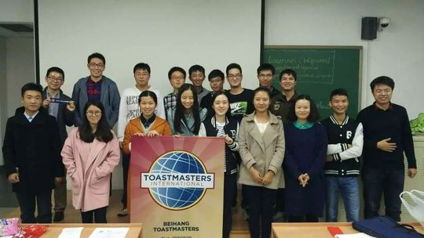
✓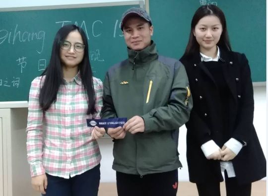
✓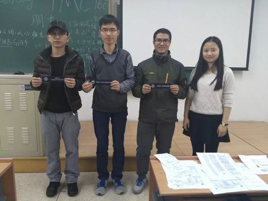
✓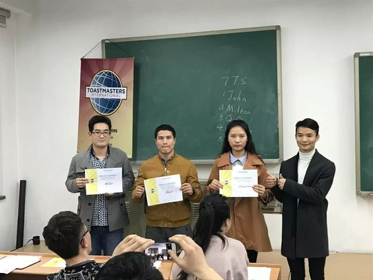
✓


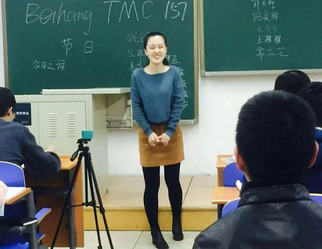
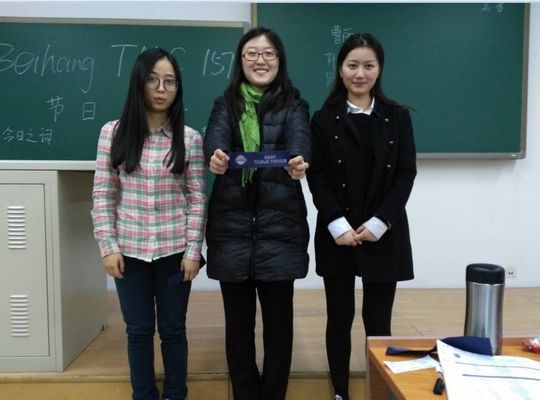
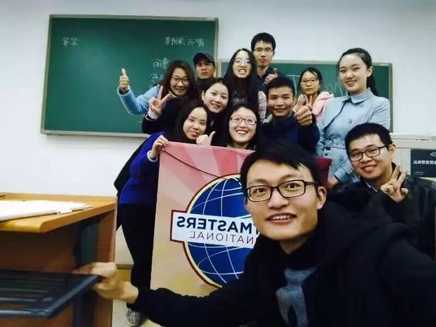


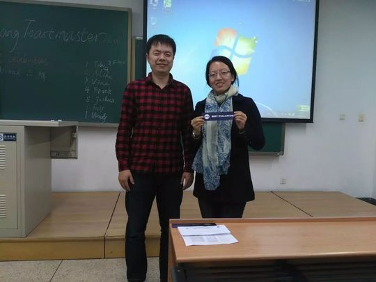

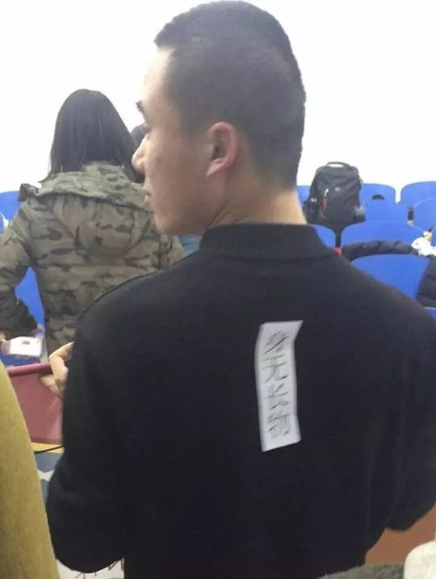
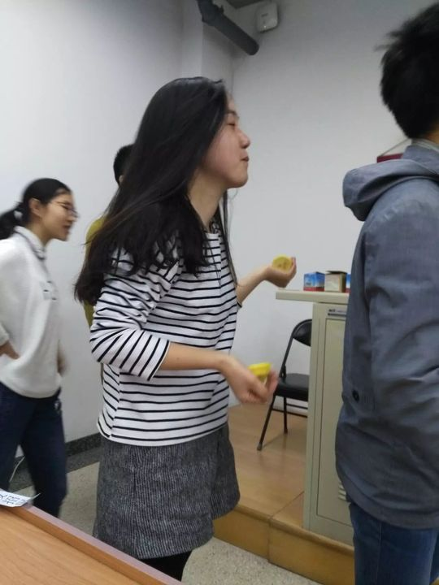
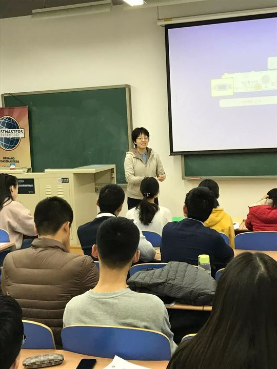
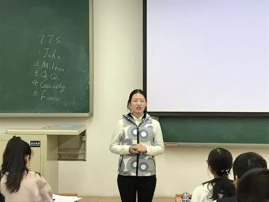